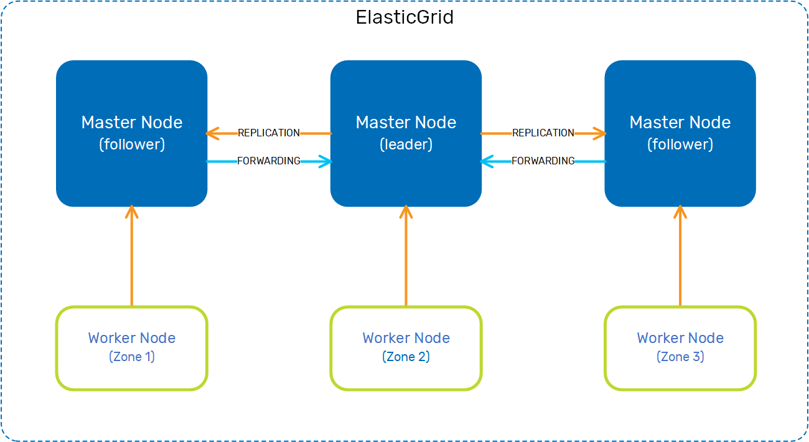
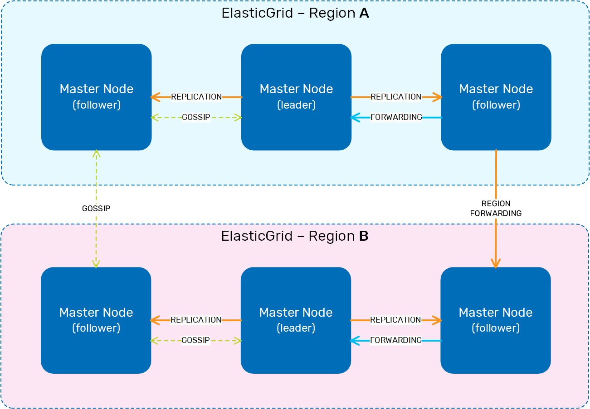

ElasticGrid is a highly available, distributed cluster and application scheduler. It supports data centers along with long-running services, batch jobs, and other critical functions, and can manage virtual machines (VMs) and containers across cloud, on premise, and hybrid environments.
ElasticGrid performs service discovery and service mesh, ensuring secure communication between services.
Overall, ElasticGrid has the following advantages when compared to Kubernetes:
In addition to the above advantages, ElasticGrid has the following functionality:
ElasticGrid has a master-worker architecture. The master is the brain of the cluster and manages all the jobs and workers, along with scheduling and tasks. There can be multiple masters in a cluster.
Workers communicate with the masters using Remote Procedure Calls (RPC). When a worker registers with a master, it provides information about itself; available resources, attributes, and installed drivers. The master can then use this information to decide how to schedule and allocate tasks among the workers.
This is how the master-worker relationship may look in a single-region topology.

In this topology, one master is the leader, and any other masters are followers. The master nodes accept jobs, manage the worker nodes, and allocate tasks among them. The leader replicates data to the followers, and the followers forward updates to the leader. The worker nodes are data centers, and there may be more than one data center registered with a master node.
ElasticGrid supports multi-region connectivity so you can replicate data between regions and cloud-based clusters. This is how the master nodes connect to each other in a multi-region topology.

In this topology, the regions function independently from each other, and have a loose coupling that enables submitting jobs or queries between the regions. The master node serving as the leader processes all the queries and transactions. While all the master nodes in a region make their scheduling decisions in parallel (ElasticGrid is optimistically concurrent), the leader coordinates all the activity to ensure the correct load balancing across the worker nodes.
The gsctl utility is used to create the ElastiGrid cluster and deploy